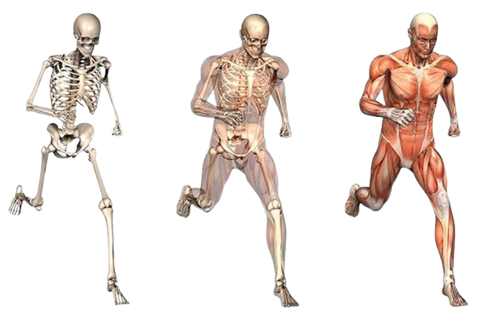
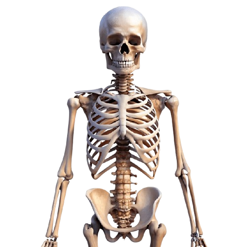
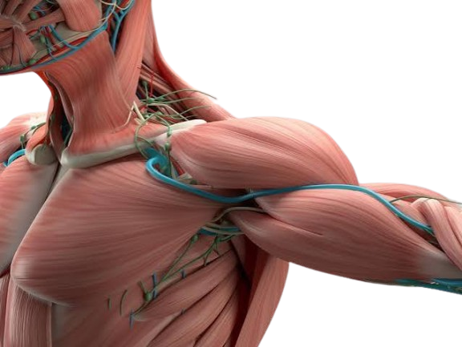

Sistem Saraf
Mengenal otak, sumsum tulang belakang, dan saraf tepi.
Pelajari bagaimana sistem saraf menerima informasi dan bagaimana tulang, sendi, serta otot bekerja sama menghasilkan gerakan.

Pelajari sistem saraf dan sistem gerak melalui empat tahapan.
Mengenal otak, sumsum tulang belakang, dan saraf tepi.
Mempelajari tulang, sendi, dan otot manusia.
Memahami proses gerak sadar dan gerak refleks.
Menguji pemahaman melalui pertanyaan interaktif.
Kenali struktur dan fungsi tubuh manusia.
Sistem saraf merupakan sistem koordinasi yang menerima rangsangan, mengolah informasi, dan menghasilkan respons tubuh.
Otak merupakan pusat pengolahan informasi dan koordinasi tubuh.
Menghubungkan otak dengan saraf tubuh serta menjadi pusat beberapa gerak refleks.
Menghubungkan sistem saraf pusat dengan reseptor dan efektor di seluruh tubuh.

Sistem gerak merupakan sistem tubuh yang memungkinkan manusia bergerak dan mempertahankan posisi tubuh.
Menopang tubuh, melindungi organ dalam, dan menjadi tempat melekatnya otot.
Tempat bertemunya tulang yang memungkinkan terjadinya berbagai gerakan.
Alat gerak aktif yang bekerja melalui kontraksi dan relaksasi.
Gerak refleks merupakan respons cepat dan otomatis terhadap rangsangan tertentu.
Ketika seseorang tidak sengaja menyentuh benda panas, tubuh dapat menarik tangan dengan cepat melalui lengkung refleks.
Pilih gambar untuk melihat detailnya.
Pusat koordinasi tubuh.

Penyangga tubuh manusia.

Penggerak aktif tubuh.
Uji pemahamanmu mengenai sistem saraf dan sistem gerak.
Digital Human Body Explorer
Human Body Explorer merupakan media pembelajaran anatomi manusia berbasis digital yang dirancang untuk membantu siswa memahami sistem saraf dan sistem gerak manusia.
Website ini menggunakan pendekatan eksplorasi visual, materi interaktif, dan kuis untuk membantu proses pembelajaran IPAS.